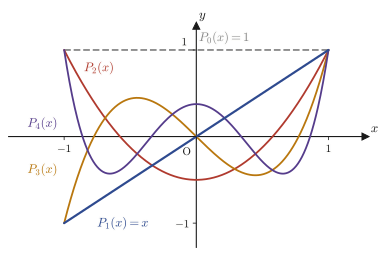

Chapter 40Legendre's Differential Equation and Legendre Polynomials
In Chapter 39 we learned that when $x=x_0$ is an ordinary point, a solution of a differential equation can be written as a power series of the form $y=\sum_{k=0}^{\infty}a_k(x-x_0)^k$. In this chapter we apply this Frobenius method to an actual differential equation—and moreover one that appears everywhere in physics and materials science. It is Legendre's differential equation, $$(1-x^2)\diff{^2y}{x^2}-2x\diff{y}{x}+n(n+1)y=0$$ At first glance its form may seem to come out of nowhere, but this equation always shows up whenever we deal with shapes that are close to spherically symmetric in three-dimensional space (spheres, planets, atoms). For example, if we use spherical coordinates $(r,\theta,\varphi)$ to separate variables in “Laplace's equation,” which determines the electric potential or the gravitational potential when charge or mass is distributed around a sphere, the part involving the angle $\theta$ becomes exactly an equation of this form (after the substitution $x=\cos\theta$). The very same equation also appears in quantum mechanics when we treat the orbital angular momentum of an electron. In short, Legendre's differential equation is a common language for handling “phenomena that occur around a sphere” in mathematical terms.
This chapter has two goals. The first is to carry out the Frobenius series method by hand all the way to the end: to derive the recurrence relation satisfied by the coefficients $a_k$, to solve it, and to write down the general solution explicitly in the form of series. The second is to discover a surprising fact hidden in that general solution—when $n$ is a nonnegative integer, one of the two series that make up the general solution terminates after finitely many terms and becomes a polynomial—and to define from it the Legendre polynomial $P_n(x)$. Finally, we arrive at a magical formula that lets us compute $P_n(x)$ in one stroke without using series, Rodrigues's formula: $$P_n(x)=\frac{1}{2^n n!}\diff{^n}{x^n}(x^2-1)^n$$ The original notes do not contain a proof of this formula, but in this chapter we have prepared a complete proof for the reader.
- Legendre's differential equation $(1-x^2)y''-2xy'+n(n+1)y=0$, and the check that $x=0$ is an ordinary point
- Substituting the power series $y=\sum a_kx^k$ and deriving the recurrence relation $a_{k+2}=\dfrac{k(k+1)-n(n+1)}{(k+1)(k+2)}a_k$ among the coefficients
- The series $U_n(x)$ with only even-degree terms and the series $V_n(x)$ with only odd-degree terms, the general solution $y=a_0U_n(x)+a_1V_n(x)$, and the proof of linear independence using the Wronskian
- Why $U_n(x)$ becomes a polynomial of finite degree when $n$ is even, and $V_n(x)$ when it is odd
- The definition of the Legendre polynomial $P_n(x)$ (normalization by $U_n(1)$ or $V_n(1)$), and the check that the radius of convergence of the series is $r=1$
- Rodrigues's formula $P_n(x)=\dfrac{1}{2^nn!}\diff{^n}{x^n}(x^2-1)^n$ and its complete proof (using Leibniz's rule)
- Orthogonality of the Legendre polynomials $\displaystyle\int_{-1}^{1}P_m(x)P_n(x)\,dx=0\ (m\neq n)$ and its proof
Source notes: Yasuhide Mochizuki, Mathematics Notes: Ordinary Differential Equations, pp. 60–65.
40.1 Legendre's Differential Equation and Its Frobenius Series Solutions
Definition 40.1: Legendre's differential equation
Let $n$ be a constant. On the interval $-1\lt x\lt 1$, the second-order linear homogeneous differential equation for the unknown function $y=y(x)$
\begin{equation} (1-x^2)\diff{^2y}{x^2}-2x\diff{y}{x}+n(n+1)y=0 \label{eq:40-legendre} \end{equation}is called Legendre's differential equation.
Throughout this chapter, $n$ is a nonnegative integer unless stated otherwise (as we will see in Section 40.4, the special phenomenon of “polynomial solutions” occurs only when $n$ is a nonnegative integer). Since the coefficient $1-x^2$ becomes $0$ at $x=\pm1$, the form of the equation changes there. We therefore restrict the domain to $-1\lt x\lt 1$.
To fit this equation into the Frobenius method learned in Chapter 39, we first divide both sides by $1-x^2\ (\neq0)$ and put the equation into the standard form $y''+P(x)y'+Q(x)y=0$ of a second-order linear homogeneous differential equation.
$$ \diff{^2y}{x^2}-\frac{2x}{1-x^2}\diff{y}{x}+\frac{n(n+1)}{1-x^2}y=0 $$That is, we set
$$ P(x)=-\frac{2x}{1-x^2},\qquad Q(x)=\frac{n(n+1)}{1-x^2} $$Both $P(x)$ and $Q(x)$ are rational functions whose denominators equal $1-0^2=1\neq0$ at $x=0$, so they can be expanded in Taylor series near $x=0$; that is, both are analytic at $x=0$. According to the definition in Chapter 39, this means precisely that “$x=0$ is an ordinary point of this differential equation.” Therefore, by the existence theorem of Chapter 39 (near an ordinary point, a solution in the form of a power series exists, and its radius of convergence is at least the distance to the singular points of the functions $P,Q$), the solutions of this differential equation can be written
$$ y=\sum_{k=0}^{\infty}a_kx^{k}\quad\text{as a power series.} $$Intuition: Why can we solve it just by “substituting and comparing coefficients”?
The idea behind the Frobenius method is very simple. Since it is guaranteed (by the theorem on ordinary points) that the solution has the form $y=\sum_k a_kx^k$, all that remains is to find out what values the coefficients $a_0,a_1,a_2,\ldots$ should concretely take. To do so, we substitute this unknown series directly into the equation and compare the coefficients of the same powers of $x$—that is all there is to it. The computation becomes somewhat long, but the idea itself is an extension of the “method of undetermined coefficients” that you learned in high school.
So let us actually investigate what the $a_k$ are. First, let
$$ y=\sum_{k=0}^{\infty}a_kx^{k}=a_0+a_1x+a_2x^2+a_3x^3+\cdots $$Differentiating this once turns each term $a_kx^k\ (k\ge1)$ into $ka_kx^{k-1}$ (the derivative of the constant term $a_0$ is $0$, so it disappears from the sum), which gives
$$ \diff{y}{x}=a_1+2a_2x+3a_3x^2+\cdots=\sum_{k=1}^{\infty}k\,a_kx^{k-1} $$Here we relabel the summation index by $k\to k+1$ (that is, we let the new index be $k'=k-1$, substitute $k=k'+1$, and then write $k'$ again as $k$); this rewrites the sum that started at $k=1$ as a sum that starts at $k=0$.
$$ \diff{y}{x}=\sum_{k=1}^{\infty}k\,a_kx^{k-1}=\sum_{k=0}^{\infty}(k+1)a_{k+1}x^{k} $$Math Note: Reindexing a sum
The statement that “changing the index does not change the value of the sum” holds because $\Sigma$ is merely an abbreviation that means “add up all the terms of the same form.” For example, written out explicitly, the left-hand side is $1\cdot a_1x^0+2\cdot a_2x^1+3\cdot a_3x^2+\cdots$, and written out explicitly, the right-hand side is $(0+1)a_{0+1}x^0+(1+1)a_{1+1}x^1+(2+1)a_{2+1}x^2+\cdots=1\cdot a_1x^0+2\cdot a_2x^1+3\cdot a_3x^2+\cdots$, so exactly the same terms appear in the same order. The index letter (whether $k$, $j$, or anything else) is merely a label that indicates “which term we are looking at now.” As long as the content of the sum (= the set of terms being added) is unchanged, the answer is the same no matter how we attach the label or how we express the lower limit of the sum. We will use this technique repeatedly in this chapter, so let us get used to it here.
Similarly, differentiating twice turns the term $a_kx^k\ (k\ge2)$ into $k(k-1)a_kx^{k-2}$ (the terms with $k=0,1$ have already vanished at the first differentiation), and we have
$$ \diff{^2y}{x^2}=\diff{}{x}\left(\diff{y}{x}\right)=\sum_{k=2}^{\infty}k(k-1)a_kx^{k-2} $$This time we relabel the index by $k\to k+2$ (with $k=k'+2$), which gives
$$ \diff{^2y}{x^2}=\sum_{k=2}^{\infty}k(k-1)a_kx^{k-2}=\sum_{k=0}^{\infty}(k+1)(k+2)a_{k+2}x^{k} $$We substitute the series expressions for $y$, $\diff{y}{x}$, and $\diff{^2y}{x^2}$ into the earlier Eq. \eqref{eq:40-legendre}. As for the $\diff{^2y}{x^2}$ in the leftmost term, it is easier to tidy up after multiplying by $(1-x^2)$ if we keep using the form $\sum_{k=2}^{\infty}k(k-1)a_kx^{k-2}$ from before the index was relabeled.
$$ (1-x^2)\sum_{k=2}^{\infty}k(k-1)a_kx^{k-2}-2x\sum_{k=1}^{\infty}k\,a_kx^{k-1}+n(n+1)\sum_{k=0}^{\infty}a_kx^{k}=0 $$We now tidy up this expression after distributing each of $(1-x^2)$ and $-2x$. Distributing the first term gives $\displaystyle\sum_{k=2}^{\infty}k(k-1)a_kx^{k-2}-\sum_{k=2}^{\infty}k(k-1)a_kx^{k}$ (note that in the latter sum, $x^{k-2}\cdot x^2=x^k$). The second term is $-2x\cdot k\,a_kx^{k-1}=-2k\,a_kx^{k}$, and pulling out the term with $k=1$ gives $-2a_1x-\displaystyle\sum_{k=2}^{\infty}2k\,a_kx^{k}$. For the third term, we simply pull out the terms with $k=0,1$ as they are.
$$ \left\{\sum_{k=2}^{\infty}k(k-1)a_kx^{k-2}-\sum_{k=2}^{\infty}k(k-1)a_kx^{k}\right\} -\left(2a_1x+\sum_{k=2}^{\infty}2k\,a_kx^{k}\right) +\left\{a_0n(n+1)+a_1n(n+1)x+\sum_{k=2}^{\infty}a_kn(n+1)x^{k}\right\}=0 $$Caution: About the annotation in the left margin of the original notes
In the left margin of the source notes at this point, there is a short annotation together with an arrow tracing a large arc. When we enlarged the annotation to check it, the characters “$k=2$” were clearly legible, but the several characters before and after them (which look like “… to $k=2$ … (align?)”) could not be deciphered. Judging from the content, this is thought to be a memo indicating the operation we perform next: “relabel the index so as to align the lower limit of the sum $\displaystyle\sum_{k=2}^{\infty}k(k-1)a_kx^{k-2}$ with $k=0$, the same as the other sums.” In what follows, we carry out this operation without omitting any steps.
Now, for the leftmost sum $\displaystyle\sum_{k=2}^{\infty}k(k-1)a_kx^{k-2}$, we relabel the index by $k\to k+2$ in the same way as before. That is, if we let $k'=k-2$ ($k=k'+2$), then $k=2$ corresponds to $k'=0$, so we can rewrite the sum as
$$ \sum_{k=2}^{\infty}k(k-1)a_kx^{k-2}=\sum_{k=0}^{\infty}(k+1)(k+2)a_{k+2}x^{k} =2a_2+6a_3x+\sum_{k=2}^{\infty}(k+1)(k+2)a_{k+2}x^{k} $$(in the last equality, we have taken the term with $k=0$, $1\cdot2\cdot a_2x^0=2a_2$, and the term with $k=1$, $2\cdot3\cdot a_3x^1=6a_3x$, out of the sum and written the rest as a sum starting from $k=2$). Now the lower limits of all the sums are aligned at $k=2$. Substituting this into the previous equation and sorting the terms into those in $x^0,x^1$ and those in $x^k\ (k\ge2)$, we obtain
\begin{equation} \left\{2a_2+a_0n(n+1)\right\} +\left\{-2a_1+a_1n(n+1)+6a_3\right\}x +\sum_{k=2}^{\infty}\left\{(k+1)(k+2)a_{k+2}-k(k-1)a_k-2k\,a_k+n(n+1)a_k\right\}x^{k}=0 \label{eq:40-B} \end{equation}In the next section, we use the fact that this equation (Eq. \eqref{eq:40-B}, which corresponds to Eq. Ⓑ of the original notes) is “an identity in $x$” to extract the recurrence relation satisfied by the coefficients $a_k$.
Example 40.1: Directly verifying the solutions for $n=0,1$
(a) For $n=0$, verify by substituting directly into the equation that the constant function $y=1$ is a solution of Legendre's differential equation. (b) For $n=1$, verify in the same way that $y=x$ is a solution.
Solution. (a) For $y=1$, we have $\diff{y}{x}=0$ and $\diff{^2y}{x^2}=0$. Substituting $n=0$ into Eq. \eqref{eq:40-legendre}, the left-hand side is
$$ (1-x^2)\cdot0-2x\cdot0+0\cdot1\cdot1=0 $$so the equation is indeed satisfied.
(b) For $y=x$, we have $\diff{y}{x}=1$ and $\diff{^2y}{x^2}=0$. Substituting $n=1$ into Eq. \eqref{eq:40-legendre}, we obtain
$$ (1-x^2)\cdot0-2x\cdot1+1\cdot2\cdot x=-2x+2x=0 $$so this one too satisfies the equation. Note that each of these two solutions, $y=1$ and $y=x$, is not an “infinitely long series” but a polynomial that ends after finitely many terms. This phenomenon—that when $n$ is a nonnegative integer, part of the general solution becomes a polynomial—is precisely the theme that we will clarify throughout this chapter.
40.2 Deriving the Recurrence Relation and Computing the Coefficients
Eq. \eqref{eq:40-B} of the previous section asserts that the left-hand side, regarded as a power series in $x$, is identically equal to $0$. In general, if a power series $\sum_k c_kx^k$ is identically $0$ on some interval (that is, its value is $0$ for every $x$ in that interval), then all the coefficients $c_k$ must be $0$ (this is the uniqueness of power series; to see it, substitute $x=0$ to get $c_0=0$, differentiate both sides and then substitute $x=0$ to get $c_1=0$, and keep repeating this step). Since Eq. \eqref{eq:40-B} has exactly this form, we may set the coefficients of $x^0$, $x^1$, and $x^k\ (k\ge2)$ each equal to $0$.
$$ \begin{cases} 2a_2+n(n+1)a_0=0 & \cdots\text{①}\\[2pt] n(n+1)a_1-2a_1+6a_3=0 & \cdots\text{②}\\[2pt] (k+1)(k+2)a_{k+2}-\{k(k-1)+2k-n(n+1)\}a_k=0 & \cdots\text{③}\quad(k\ge2) \end{cases} $$The contents of the braces in ③ simplify to $k(k-1)+2k=k^2-k+2k=k^2+k=k(k+1)$, so we can rewrite ③ as
$$ (k+1)(k+2)a_{k+2}-\{k(k+1)-n(n+1)\}a_k=0\qquad(k\ge2) $$Here we notice something interesting. Substituting $k=0$ into the left-hand side of ③ gives $1\cdot2\cdot a_2-\{0-n(n+1)\}a_0=2a_2+n(n+1)a_0$, which coincides exactly with the left-hand side of ①. Similarly, substituting $k=1$ gives $2\cdot3\cdot a_3-\{2-n(n+1)\}a_1=6a_3+n(n+1)a_1-2a_1$, which also coincides with the left-hand side of ②. In other words, ① is nothing but “③ for $k=0$” and ② is nothing but “③ for $k=1$,” so ①, ②, and ③ can be expressed together as the following single recurrence relation.
Theorem 40.1: Coefficient recurrence for Legendre's differential equation
The coefficients of the series solution $y=\sum_{k=0}^{\infty}a_kx^k$ satisfy the following recurrence relation.
\begin{equation} a_{k+2}=\frac{k(k+1)-n(n+1)}{(k+1)(k+2)}\,a_k\qquad(k=0,1,2,\ldots) \label{eq:40-recurrence} \end{equation}If we factor the numerator $k(k+1)-n(n+1)$ of this recurrence relation further, the later discussion (Sections 40.3 and 40.4) becomes easier to follow. We factor the difference of $k^2$ and $n^2$ with the factoring formula $a^2-b^2=(a-b)(a+b)$ learned in high school, and pull out the common factor $(k-n)$.
$$ k(k+1)-n(n+1)=k^2+k-n^2-n=(k^2-n^2)+(k-n)=(k-n)(k+n)+(k-n)=(k-n)\{(k+n)+1\}=(k-n)(k+n+1) $$Therefore, noting that $k-n=-(n-k)$ and arranging the signs accordingly, we can write the recurrence relation, Eq. \eqref{eq:40-recurrence}, as
\begin{equation} a_{k+2}=\frac{(k-n)(k+n+1)}{(k+1)(k+2)}a_k=-\frac{(n-k)(n+k+1)}{(k+1)(k+2)}a_k\qquad(k=0,1,2,\ldots) \label{eq:40-recurrence2} \end{equation}There is one important fact that can be read off immediately from this form—if we ever reach $k=n$ (that is, the moment the index $k$ takes the same value as $n$), the factor $(n-k)$ on the right-hand side becomes $0$, so $a_{k+2}=0$. This observation plays a decisive role in Sections 40.3 and 40.4.
Eq. \eqref{eq:40-recurrence2} is a rule that produces $a_{k+2}$ from the term $a_k$ two places before it, so the sequence with even indices $a_0,a_2,a_4,\ldots$ and the sequence with odd indices $a_1,a_3,a_5,\ldots$ are determined independently of each other. Let us therefore start from the arbitrary constants $a_0,a_1$ and actually compute each sequence.
40.2.1 Even-indexed coefficients
When $k$ is even, we substitute $k=0,2,4,\ldots$ in turn into Eq. \eqref{eq:40-recurrence2}.
$$ k=0\ \text{gives}\quad a_2=-\frac{n(n+1)}{2\cdot1}a_0=-\frac{n(n+1)}{2!}a_0 $$ $$ k=2\ \text{gives}\quad a_4=-\frac{(n-2)(n+3)}{3\cdot4}a_2=-\frac{(n-2)(n+3)}{3\cdot4}\left(-\frac{n(n+1)}{2!}\right)a_0=(-1)^2\frac{n(n-2)\times(n+1)(n+3)}{4!}a_0 $$(After substituting the expression for $a_2$, we simplified using the fact that the denominator becomes $2!\cdot3\cdot4=2\cdot(3\cdot4)=4!$. The sign is $(-1)\times(-1)=(-1)^2$.)
$$ k=4\ \text{gives}\quad a_6=-\frac{(n-4)(n+5)}{5\cdot6}a_4=(-1)^3\frac{n(n-2)(n-4)\times(n+1)(n+3)(n+5)}{6!}a_0 $$If we continue this computation, the following form of the general term emerges for $j\ge1$ (just follow the pattern in which one more factor is added each time).
$$ a_{2j}=(-1)^j\,\frac{\bigl[n(n-2)(n-4)\cdots(n-2(j-1))\bigr]\times\bigl[(n+1)(n+3)(n+5)\cdots(n+2j-1)\bigr]}{(2j)!}\,a_0 =(-1)^j\frac{\displaystyle\prod_{i=0}^{j-1}(n-2i)\times\prod_{i=0}^{j-1}(n+1+2i)}{(2j)!}a_0 $$(The symbol $\prod$ is capital pi, read “pi” and called the “continued product”; it is the multiplication version of $\Sigma$, and it means that $\prod_{i=0}^{j-1}(n-2i)=n(n-2)(n-4)\cdots(n-2(j-1))$.)
40.2.2 Odd-indexed coefficients
In exactly the same way, when $k$ is odd, we substitute $k=1,3,5,\ldots$ into Eq. \eqref{eq:40-recurrence2}.
$$ k=1\ \text{gives}\quad a_3=-\frac{(n-1)(n+2)}{2\cdot3}a_1=-\frac{(n-1)(n+2)}{3!}a_1 $$ $$ k=3\ \text{gives}\quad a_5=-\frac{(n-3)(n+4)}{4\cdot5}a_3=(-1)^2\frac{(n-1)(n-3)\times(n+2)(n+4)}{5!}a_1 $$ $$ k=5\ \text{gives}\quad a_7=-\frac{(n-5)(n+6)}{6\cdot7}a_5=(-1)^3\frac{(n-1)(n-3)(n-5)\times(n+2)(n+4)(n+6)}{7!}a_1 $$Here, too, the general term, for $j\ge1$, is
$$ a_{2j+1}=(-1)^j\frac{\displaystyle\prod_{i=0}^{j-1}(n-1-2i)\times\prod_{i=0}^{j-1}(n+2+2i)}{(2j+1)!}a_1 $$In the next section, we name these two series (the series containing only even powers and the series containing only odd powers) $U_n(x)$ and $V_n(x)$, respectively, and assemble the general solution.
Example 40.2: Computing coefficients concretely from the recurrence relation
(a) Let $n=2$ and $a_0=1$. Find $a_2$ and $a_4$ from Eq. \eqref{eq:40-recurrence2}, and write down $1+a_2x^2+a_4x^4$. (b) Let $n=3$ and $a_1=1$. Find $a_3$ and $a_5$, and write down $x+a_3x^3+a_5x^5$.
Solution. (a) $k=0$: $a_2=-\dfrac{2\cdot3}{1\cdot2}a_0=-3$. $k=2$: $a_4=-\dfrac{(2-2)(2+3)}{3\cdot4}a_2=-\dfrac{0\cdot5}{12}a_2=0$. Hence the series is $1-3x^2+0\cdot x^4+\cdots$, and in fact, because the numerator factor $(n-k)=(2-2)=0$ appears at the stage of $a_4$, all the coefficients after this are also $0$ (we explain this phenomenon in general in Section 40.3). Therefore the required expression is $1-3x^2$.
(b) $k=1$: $a_3=-\dfrac{(3-1)(3+2)}{2\cdot3}a_1=-\dfrac{2\cdot5}{6}=-\dfrac{5}{3}$. $k=3$: $a_5=-\dfrac{(3-3)(3+4)}{4\cdot5}a_3=-\dfrac{0\cdot7}{20}a_3=0$. Hence the required expression is $x-\dfrac{5}{3}x^3$ (in this case, too, the factor $(n-k)=(3-3)=0$ appears, and all the coefficients after it are $0$). (Verified with SymPy.)
40.3 The General Solution and $U_n(x)$, $V_n(x)$
Let us put the sequence of even-indexed coefficients and the sequence of odd-indexed coefficients found in the previous section back into the original series $y=\sum_k a_kx^k$ and assemble the solution. If we take $a_0,a_1$ to be arbitrary constants, the general solution of Legendre's differential equation can be written as
$$ y=(a_0+a_2x^2+a_4x^4+a_6x^6+\cdots)+(a_1x+a_3x^3+a_5x^5+a_7x^7+\cdots) $$(we have separated the terms into the collection of all even-degree terms and the collection of all odd-degree terms). Substituting the coefficient formulas found in Section 40.2, we obtain
$$ y=a_0\left\{1-\frac{n(n+1)}{2!}x^2+\frac{n(n-2)(n+1)(n+3)}{4!}x^4-\frac{n(n-2)(n-4)(n+1)(n+3)(n+5)}{6!}x^6+\cdots\right\} $$ $$ +a_1\left\{x-\frac{(n-1)(n+2)}{3!}x^3+\frac{(n-1)(n-3)(n+2)(n+4)}{5!}x^5-\frac{(n-1)(n-3)(n-5)(n+2)(n+4)(n+6)}{7!}x^7+\cdots\right\} $$Let us give a name to each of the two series inside the curly braces.
Definition 40.2: $U_n(x)$ and $V_n(x)$
$$ U_n(x)=1-\frac{n(n+1)}{2!}x^2+\frac{n(n-2)(n+1)(n+3)}{4!}x^4-\cdots =\sum_{j=0}^{\infty}(-1)^j\frac{\displaystyle\prod_{i=0}^{j-1}(n-2i)\prod_{i=0}^{j-1}(n+1+2i)}{(2j)!}x^{2j} $$ $$ V_n(x)=x-\frac{(n-1)(n+2)}{3!}x^3+\frac{(n-1)(n-3)(n+2)(n+4)}{5!}x^5-\cdots =\sum_{j=0}^{\infty}(-1)^j\frac{\displaystyle\prod_{i=0}^{j-1}(n-1-2i)\prod_{i=0}^{j-1}(n+2+2i)}{(2j+1)!}x^{2j+1} $$Caution: On an error in the source notes (the numerator of $U_n(x)$)
On p. 62 of the source notes, the numerators of the coefficients of $U_n(x)$ are written as “$n\times(n-1)$” and “$n(n+2)\times(n+1)(n+3)$” (the passage is underlined in blue). However, if we compare with the expression written out in the form $a_0\{\cdots\}$ immediately before that passage (the expression displayed just above in this book as well), the numerators must be “$n\times(n+1)$” and “$n(n-2)\times(n+1)(n+3)$”. Indeed, as computed in Section 40.2, $a_2=-\dfrac{n(n+1)}{2!}a_0$ and $a_4=\dfrac{n(n-2)(n+1)(n+3)}{4!}a_0$, and in this book we have defined $U_n(x)$ with the correct expressions.
With this, the general solution has been put into the compact form $y=a_0U_n(x)+a_1V_n(x)$ ($a_0,a_1$ are arbitrary constants). However, for this to deserve the name “general solution,” we must first confirm that $U_n(x)$ and $V_n(x)$ are two independent solutions, neither of which is a constant multiple of the other.
Linear independence of $U_n(x)$ and $V_n(x)$
Looking at the series in Definition 40.2, we see that $U_n(x)$ consists only of even-degree terms, and the coefficient of $x^0$ is $1$. On the other hand, $V_n(x)$ consists only of odd-degree terms, and the coefficient of $x^1$ is $1$. Therefore
$$ U_n(0)=1,\qquad U_n'(0)=0,\qquad V_n(0)=0,\qquad V_n'(0)=1 $$(Differentiating $U_n(x)$ turns even degrees $\to$ odd degrees, so at $x=0$, where only the constant term survives, $U_n'(0)=0$. For $V_n(x)$, the coefficient of $x$ is exactly $V_n'(0)$.) Using the Wronskian $W(f,g)(x)=f(x)g'(x)-f'(x)g(x)$ that we learned in Chapter 35, we obtain
$$ W(U_n,V_n)(0)=U_n(0)V_n'(0)-U_n'(0)V_n(0)=1\cdot1-0\cdot0=1\neq0 $$By the theorem of Chapter 35 (if the Wronskian of two solutions is not $0$ at some point, then the two solutions are linearly independent), $U_n(x)$ and $V_n(x)$ are linearly independent. In particular, $U_n(x)=CV_n(x)$ ($C$ is a constant) can never hold.
Theorem 40.2: The general solution of Legendre's differential equation
Let $U_n(x)$ and $V_n(x)$ be as in Definition 40.2. Then the general solution of Legendre's differential equation (Eq. \eqref{eq:40-legendre}) is given by
$$ y=a_0U_n(x)+a_1V_n(x)\qquad(a_0,a_1\text{ are arbitrary constants}) $$.
Now we come to the most interesting part of this chapter. Looking closely at the definitions of $U_n(x)$ and $V_n(x)$, we see that the following phenomenon occurs: one of them ends after finitely many terms and becomes a polynomial, while the other continues indefinitely as an infinite series. As we observed at the end of Section 40.2, the numerator of the recurrence relation, Eq. \eqref{eq:40-recurrence2}, contains the factor $(n-k)$, so when the sequence of coefficients (either the even-indexed one or the odd-indexed one) reaches $k=n$, the coefficient becomes $0$ at that moment, and it stays $0$ forever after. The question is whether $k=n$ appears in the “even-indexed sequence ($k=0,2,4,\ldots$)” or in the “odd-indexed sequence ($k=1,3,5,\ldots$).” This is determined solely by the parity of $n$.
Theorem 40.3: When $n$ is even
When $n=2m$ ($m$ is a nonnegative integer, that is, $n$ is even), $U_n(x)$ is a polynomial of degree $n$, and $V_n(x)$ remains an infinite series.
Proof
In the numerator of the coefficient $a_{2j}$ of $U_n(x)$ ($j\ge1$), by the general-term formula of Section 40.2.1, the factor $\displaystyle\prod_{i=0}^{j-1}(n-2i)=n(n-2)(n-4)\cdots(n-2(j-1))$ appears. Putting $n=2m$ and substituting $j=m+1$, this product becomes
$$ n(n-2)(n-4)\cdots(n-2(m-1))\cdot(n-2m) $$(the number of factors in the product is $j=m+1$), and the last factor is $n-2m=2m-2m=0$. That is, $a_{2(m+1)}=a_{n+2}=0$. Written in the notation of the original notes, the product of the part shown in blue is
$$ 2m,\ 2m(2m-2),\ \ldots,\ 2m(2m-2)\cdots\{2m-(2m-2)\},\ 2m(2m-2)\cdots\{2m-(2m-2)\}\cdot(2m-2m) $$in which the factor $(2m-2m)=0$ appears exactly at the end. Since the recurrence relation, Eq. \eqref{eq:40-recurrence2}, merely builds $a_{k+2}$ as a constant multiple of $a_k$, once $a_{n+2}=0$ holds, all the subsequent coefficients $a_{n+4},a_{n+6},\ldots$ are constant multiples of $a_{n+2}=0$ and so remain $0$. Therefore $U_n(x)$ is a polynomial of degree $n$ that ends with the term in $x^{n}$ (the upper row of Figure 40.1).
On the other hand, in the numerator of the coefficient $a_{2j+1}$ of $V_n(x)$, the factor $\displaystyle\prod_{i=0}^{j-1}(n-1-2i)=(n-1)(n-3)\cdots$ appears. This becomes $0$ only when some odd number $n-1-2i$ becomes $0$, that is, only when there exists an integer $i$ satisfying $n-1-2i=0$; but as long as $n$ is even, $n-1$ is odd and $n-1-2i$ always remains odd, so it can never be $0$. Therefore none of the coefficients of $V_n(x)$ becomes $0$, and it remains an infinite series (the lower row of Figure 40.1). ∎
Example 40.3: Checking independence with the Wronskian ($n=3$)
For $n=3$, find the low-order terms of $U_3(x)$ and $V_3(x)$ from the recurrence relation, Eq. \eqref{eq:40-recurrence2} (note that, since $n=3$ is odd, $V_3(x)$ ends as a polynomial while $U_3(x)$ continues as an infinite series), and confirm that even so the Wronskian $W(U_3,V_3)(0)$ can be computed and is not $0$.
Solution. Even-indexed coefficients: for $k=0$, $a_2=-\dfrac{3\cdot4}{1\cdot2}=-6$; for $k=2$, $a_4=-\dfrac{1\cdot6}{3\cdot4}a_2=-\dfrac12\cdot(-6)=3$; and so on. The coefficients continue without becoming $0$, so $U_3(x)=1-6x^2+3x^4+\cdots$ is an infinite series. Odd-indexed coefficients: for $k=1$, $a_3=-\dfrac{2\cdot5}{2\cdot3}=-\dfrac53$; for $k=3$, $(n-k)=(3-3)=0$ gives $a_5=0$ (and all later coefficients are $0$ as well), so $V_3(x)=x-\dfrac53x^3$ is a polynomial that ends at degree 3.
What matters here is that, whether $U_3(x)$ is finite or infinite, $U_3(0)=1$ and $U_3'(0)=0$ hold automatically from the way the series is constructed in Definition 40.2 (collect only the even-degree terms, and normalize the constant term to $1$). (Every term of $U_3(x)$ is one of $x^0,x^2,x^4,\ldots$, so after differentiation they take the forms $x^1,x^3,\ldots$, and all of them vanish at $x=0$.) Similarly, $V_3(0)=0$ and $V_3'(0)=1$ (differentiating $V_3(x)=x-\frac53x^3$ gives $V_3'(x)=1-5x^2$, so $V_3'(0)=1$). Hence
$$ W(U_3,V_3)(0)=U_3(0)V_3'(0)-U_3'(0)V_3(0)=1\cdot1-0\cdot0=1\neq0 $$and $U_3(x)$ and $V_3(x)$ are linearly independent. (In general, $U_n(x)$ and $V_n(x)$ of Definition 40.2 always satisfy $U_n(0)=1,U_n'(0)=0,V_n(0)=0,V_n'(0)=1$, so regardless of whether they are finite or infinite, $W(U_n,V_n)(0)=1$ for every $n$; this was verified with SymPy for $n=0,\ldots,5$.)
Example 40.4: Checking that $U_6(x)$ is a polynomial for $n=6$ (even)
For $n=6$, use the recurrence relation, Eq. \eqref{eq:40-recurrence2}, to compute $a_2,a_4,a_6,a_8$ starting from $a_0=1$, and confirm that $U_6(x)$ ends as a polynomial of degree 6.
Solution. $k=0$: $a_2=-\dfrac{6\cdot7}{1\cdot2}=-21$. $k=2$: $a_4=-\dfrac{4\cdot9}{3\cdot4}a_2=-3\cdot(-21)=63$. $k=4$: $a_6=-\dfrac{2\cdot11}{5\cdot6}a_4=-\dfrac{22}{30}\cdot63=-\dfrac{231}{5}$. $k=6$: $a_8=-\dfrac{(6-6)(6+7)}{7\cdot8}a_6=-\dfrac{0\cdot13}{56}a_6=0$. Indeed, the factor $(n-k)=0$ appears at $k=n=6$, and $a_8=0$ results (from then on $a_{10}=a_{12}=\cdots=0$). Therefore
$$ U_6(x)=1-21x^2+63x^4-\frac{231}{5}x^6 $$is a polynomial that ends at degree 6 (verified with SymPy).
40.4 Legendre Polynomials
Theorem 40.4: When $n$ is odd
When $n=2m+1$ ($m$ is a nonnegative integer, that is, $n$ is odd), $V_n(x)$ is a polynomial of degree $n$, and $U_n(x)$ remains an infinite series.
Proof
It suffices to repeat exactly the same argument as in the proof of Theorem 40.3, with the even-indexed and odd-indexed terms interchanged. In the numerator of the coefficient $a_{2j+1}$ of $V_n(x)$ there appears the factor $\displaystyle\prod_{i=0}^{j-1}(n-1-2i)=(n-1)(n-3)\cdots$. If $n=2m+1$, then $n-1=2m$ is even, and if we substitute $j=m+1$, the last factor of this product is
$$ \{(2m+1)-1\}-2m=(2m)-2m=0 $$That is, in the notation of the original notes, the product looks like
$$ \{(2m+1)-1\},\ \{(2m+1)-1\}\{(2m+1)-3\},\ \ldots,\ \{(2m+1)-1\}\cdots\{(2m+1)-(2m-1)\},\ \{(2m+1)-1\}\cdots\{(2m+1)-(2m+1)\} $$and the product becomes exactly $0$ at the last factor $\{(2m+1)-(2m+1)\}=0$. Therefore $a_{2(m+1)+1}=a_{n+2}=0$, and the subsequent coefficients $a_{n+4},a_{n+6},\ldots$ also become $0$ one after another, so $V_n(x)$ is a polynomial of degree $n$ that ends with the term in $x^n$.
On the other hand, the factors $n-2i$ in the numerator of the coefficient $a_{2j}$ of $U_n(x)$ always remain odd as long as $n$ is odd, and so they never become $0$; hence $U_n(x)$ remains an infinite series. ∎
Example 40.5: $U_4(x)$ for $n=4$ and $V_5(x)$ for $n=5$ (a worked example from the source notes)
For $n=4$ (even), find $U_4(x)$, and for $n=5$ (odd), find $V_5(x)$, using the recurrence relation, Eq. \eqref{eq:40-recurrence2}.
Solution. $n=4$: For $k=0$, $a_2=-\dfrac{4\cdot5}{1\cdot2}a_0=-10a_0$. For $k=2$, $a_4=-\dfrac{2\cdot7}{3\cdot4}a_2=-\dfrac{14}{12}\cdot(-10)a_0=\dfrac{35}{3}a_0$. For $k=4$, $(n-k)=(4-4)=0$, so $a_6=0$ (and the later coefficients are $0$ as well). Therefore, taking $a_0=1$, we obtain
$$ U_4(x)=1-10x^2+\frac{35}{3}x^4 $$Caution: On an error in the source notes (the coefficient in $U_4(x)$)
On p. 63 the source notes write “$U_4(x)=1-6x^2+\dfrac{35}{3}x^4$,” but this contradicts the computation above and also the expression actually used on p. 64 of the source notes when $P_4(x)$ is computed (there, $U_4(x)=1-10x^2+\frac{35}{3}x^4$ is used). That is, there is an inconsistency within the source notes themselves, and the computation on p. 64 is the correct one. This book adopts the correct value $1-10x^2+\frac{35}{3}x^4$.
$n=5$: For $k=1$, $a_3=-\dfrac{4\cdot7}{2\cdot3}a_1=-\dfrac{14}{3}a_1$. For $k=3$, $a_5=-\dfrac{2\cdot9}{4\cdot5}a_3=-\dfrac{9}{10}\cdot\left(-\dfrac{14}{3}\right)a_1=\dfrac{21}{5}a_1$. For $k=5$, $(n-k)=(5-5)=0$, so $a_7=0$. Therefore, taking $a_1=1$, we obtain
$$ V_5(x)=x-\frac{14}{3}x^3+\frac{21}{5}x^5 $$(Both results were recomputed from the recurrence relation with SymPy, and their agreement was confirmed.)
By Theorems 40.3 and 40.4, when $n$ is a nonnegative integer, exactly one of $U_n(x)$ and $V_n(x)$ is a polynomial of degree $n$. So let us normalize “the one that becomes a polynomial” by its value at $x=1$ and give it a name.
Definition 40.3: Legendre polynomial $P_n(x)$
(i) When $n$ is even, $P_n(x)=\dfrac{U_n(x)}{U_n(1)}$.
(ii) When $n$ is odd, $P_n(x)=\dfrac{V_n(x)}{V_n(1)}$.
(That $U_n(1)\neq0$ and $V_n(1)\neq0$ will be confirmed in general, in the form $w(1)=n!\,2^n\neq0$, when we prove Rodrigues's formula in the next section.) We call this the Legendre polynomial. It is clear from the definition that $P_n(1)=1$ for every $n$ (in case (i), the denominator and the numerator are both $U_n(1)$, so $P_n(1)=U_n(1)/U_n(1)=1$; in case (ii), likewise, $P_n(1)=V_n(1)/V_n(1)=1$. This is nothing more than a property of division itself: “dividing $1$ by the same number other than $0$ always gives $1$”).
Using Legendre polynomials, we can rewrite the general solution (Theorem 40.2) by separating it into a part with finitely many terms and a part that is an infinite series.
(i) When $n$ is even, $U_n(x)=U_n(1)P_n(x)$, so the general solution is, with $C_1,C_2$ arbitrary constants,
$$ y=C_1\underset{\text{finitely many terms}}{P_n(x)}+C_2\underset{\text{infinitely many terms}}{V_n(x)} $$(ii) When $n$ is odd, $V_n(x)=V_n(1)P_n(x)$, so, similarly, we can write
$$ y=C_1\underset{\text{infinitely many terms}}{U_n(x)}+C_2\underset{\text{finitely many terms}}{P_n(x)} $$In both cases, let us check the radius of convergence of the part that remains an infinite series ($U_1(x),U_3(x),U_5(x),\ldots$ and $V_0(x),V_2(x),V_4(x),\ldots$).
Theorem 40.5: Radius of convergence of $U_n(x)$ and $V_n(x)$
The radius of convergence of $U_n(x)$ (for $n$ odd) and of $V_n(x)$ (for $n$ even), which remain infinite series, is $r=1$.
Proof (d'Alembert's test)
The recurrence relation for the coefficients, Eq. \eqref{eq:40-recurrence2}, was $a_{k+2}=-\dfrac{(n-k)(n+k+1)}{(k+1)(k+2)}a_k$. In $U_n(x)$ and $V_n(x)$, the terms are integer powers of $x^2$ only, and neighboring terms are connected (the nonzero term after $x^k$ is $x^{k+2}$), so we regard each of them as the series $\sum_j b_jt^j$ in $t=x^2$ (where $b_j=a_{2j}$ or $a_{2j+1}$), and find its radius of convergence by the ratio test ($D$'Alembert's test) that we learned in Chapter 39. The ratio test said that if $\displaystyle\lim_{j\to\infty}\left|\frac{b_j}{b_{j+1}}\right|=R$ exists, then the series $\sum_j b_jt^j$ converges for $|t|\lt R$. Here $b_j/b_{j+1}=a_k/a_{k+2}$ ($k=2j$ or $2j+1$), so it suffices to compute
$$ R=\lim_{k\to\infty}\left|\frac{a_k}{a_{k+2}}\right|=\lim_{k\to\infty}\left|\frac{(k+1)(k+2)}{(k-n)(k+n+1)}\right| $$Dividing the numerator and the denominator by $k^2$ before taking the limit, we obtain
$$ R=\lim_{k\to\infty}\left|\frac{\left(1+\dfrac1k\right)\left(1+\dfrac2k\right)}{\left(1-\dfrac{n}k\right)\left(1+\dfrac{n+1}k\right)}\right|=\frac{1\cdot1}{1\cdot1}=1 $$The last equality holds because $1/k,n/k,(n+1)/k,2/k\to0$ as $k\to\infty$. This means that the radius of convergence in $t=x^2$ is $1$, that is, the series converges for $|x^2|\lt1$, or, in other words, for $|x|\lt1$. Therefore the radius of convergence in $x$ is $r=1$. ∎
Caution: On an error in the source notes (the formula for $r^2=|a_k/a_{k+2}|$)
On p. 63 the source notes write this limit as “$r^2=\displaystyle\lim_{k\to\infty}\left|\dfrac{a_k}{a_{k+2}}\right|=\displaystyle\lim_{k\to\infty}\left|\dfrac{(k-n)(k+n+1)}{(k+1)(k+2)}\right|$.” However, if we take the reciprocals of both sides of the recurrence relation, Eq. \eqref{eq:40-recurrence2}, that is, $a_{k+2}=-\dfrac{(n-k)(n+k+1)}{(k+1)(k+2)}a_k$, the ratio $a_k/a_{k+2}$ should be $\dfrac{(k+1)(k+2)}{(k-n)(k+n+1)}$ (the numerator and the denominator are exactly interchanged). In other words, apart from the sign, the formula in the source notes gives the value of the ratio $a_{k+2}/a_k$ instead (the formula actually used in the proof above, $\displaystyle R=\lim_{k\to\infty}\left|\frac{(k+1)(k+2)}{(k-n)(k+n+1)}\right|$, is the correct form for $a_k/a_{k+2}$). Note, however, that in the limit $k\to\infty$ both formulas have the value $1$, so the final conclusion $r=1$ itself is unchanged.
Intuition: Why do we write $r^2$?
The source notes write this limit in the form $r^2=\lim|a_k/a_{k+2}|$ (the preceding Caution pointed out that the concrete expression contained an error, but the notation “$r^2$” itself is intentional). This comes from the fact that $U_n(x)$ and $V_n(x)$ are in effect series in the variable $t=x^2$. What we want to note here is that the relation “$t=x^2$” is a correspondence between variables, in which $t$ moves accordingly whenever $x$ moves, and does not mean that $t$ is stuck at some fixed value. On the other hand, the radius of convergence $R$ of the series $\sum_jb_jt^j$ in $t$ (the value $R=1$ found in the proof above) is a boundary value, telling how far we can move $t$ while the series keeps converging, and this is a constant. If we lay out the two schematically so as not to confuse them, the boundary of convergence, that is, “the point where $t=R$,” translated into the language of $x$ is “the point where $x^2=R$”; and if we denote the radius of convergence in $x$ by $r$, this boundary is exactly $x=r$ as well, so that $x^2=r^2$ too. Since the same boundary is expressed in two ways, $x^2=R$ and $x^2=r^2$ refer to the same point, and therefore $R=r^2$. Substituting $R=1$ gives $r^2=1$, that is, $r=1$.

Example 40.6: Reproducing the radius-of-convergence computation for a specific $n$
For $n=3$, verify the radius of convergence of $U_3(x)$, which remains an infinite series, by retracing the computation in Theorem 40.5 with your own hands.
Solution. Substituting $n=3$, we have
$$ R=\lim_{k\to\infty}\left|\frac{(k+1)(k+2)}{(k-3)(k+4)}\right| =\lim_{k\to\infty}\left|\frac{\left(1+\frac1k\right)\left(1+\frac2k\right)}{\left(1-\frac3k\right)\left(1+\frac4k\right)}\right|=\frac{1}{1}=1 $$and we confirm that $R=1$ (and hence $r=1$) regardless of the value of $n$. (Even in a limit that contains $n$, $n/k\to0$ as $k\to\infty$, so the specific value of $n$ does not affect the final answer.)
40.5 Rodrigues's Formula and Orthogonality
With the methods so far, every time we wanted to find $P_n(x)$ we had to go through a long procedure: “construct a series solution, solve the recurrence relation for the coefficients all the way through, and normalize at $x=1$.” In fact, however, there is a surprisingly concise formula that computes $P_n(x)$ in one stroke.
Formula 40.1: Rodrigues's formula
For $n=0,1,2,\ldots$, the Legendre polynomial can also be written as
\begin{equation} P_n(x)=\frac{1}{2^n n!}\diff{^n}{x^n}(x^2-1)^n \label{eq:40-rodrigues} \end{equation}This is called Rodrigues's formula.
In the source notes this formula is simply handed down without justification and is checked only on concrete examples; the proof itself is never written, and its place is left blank. So we first retrace the verification computations in the source notes, and then give, in this book's own way, a complete proof of the formula.
Example 40.7: Computing $P_1$ through $P_4$ using Definition 40.3 (normalization by $U_n(1)$, $V_n(1)$)
Using $U_2(x)=1-3x^2$, $U_4(x)=1-10x^2+\dfrac{35}{3}x^4$, $V_1(x)=x$, and $V_3(x)=x-\dfrac53x^3$, find $P_1(x),P_2(x),P_3(x),P_4(x)$ according to Definition 40.3.
Solution. $n=1$ (odd): Since $V_1(1)=1$, $P_1(x)=\dfrac{V_1(x)}{V_1(1)}=\dfrac{x}{1}=x$.
$n=2$ (even): Since $U_2(1)=1-3=-2$, $P_2(x)=\dfrac{U_2(x)}{U_2(1)}=\dfrac{1-3x^2}{-2}=\dfrac12(3x^2-1)$.
$n=3$ (odd): Since $V_3(1)=1-\dfrac53=-\dfrac23$, $P_3(x)=\dfrac{V_3(x)}{V_3(1)}=\dfrac{x-\frac53x^3}{-\frac23}=\dfrac32\left(\dfrac53x^3-x\right)=\dfrac12(5x^3-3x)$.
$n=4$ (even): Since $U_4(1)=1-10+\dfrac{35}{3}=\dfrac{-27+35}{3}=\dfrac83$, $P_4(x)=\dfrac{U_4(x)}{U_4(1)}=\dfrac{1-10x^2+\frac{35}{3}x^4}{\frac83}=\dfrac38\left(1-10x^2+\frac{35}{3}x^4\right)=\dfrac18(35x^4-30x^2+3)$.
Example 40.8: Computing $P_1(x)$ and $P_2(x)$ directly from Rodrigues's formula
Compute $P_1(x)$ and $P_2(x)$ directly using Eq. \eqref{eq:40-rodrigues}, and verify that they agree with the results of Example 40.7.
Solution. $n=1$: $\dfrac{1}{2^1\cdot1!}\diff{}{x}(x^2-1)^1=\dfrac12\cdot2x=x$. This indeed agrees with $P_1(x)=x$.
$n=2$: Since $(x^2-1)^2=x^4-2x^2+1$, we have $\diff{}{x}(x^2-1)^2=4x^3-4x$ and $\diff{^2}{x^2}(x^2-1)^2=12x^2-4$. Therefore
$$ \frac{1}{2^2\cdot2!}\diff{^2}{x^2}(x^2-1)^2=\frac{1}{8}(12x^2-4)=\frac12(3x^2-1) $$which again agrees with $P_2(x)=\dfrac12(3x^2-1)$. (Verified with SymPy: both computational methods were compared for $n=0,\ldots,7$, and all of them agree.)
We have confirmed that the two computational methods agree, but guaranteeing that this holds for all $n$ requires a proof. Below we give a proof that is not in the source notes.
Math Note: Leibniz's rule (higher derivatives of a product)
Differentiating the product $f(x)g(x)$ of two functions $n$ times gives a formula that looks just like the binomial theorem $\displaystyle(a+b)^n=\sum_{i=0}^{n}\binom{n}{i}a^{n-i}b^{i}$:
$$ (fg)^{(n)}(x)=\sum_{i=0}^{n}\binom{n}{i}f^{(n-i)}(x)g^{(i)}(x) $$This is called Leibniz's rule. When $n=1$ it is exactly $(fg)'=f'g+fg'$ (the product rule for differentiation that you learned in high school), and when $n=2$ it becomes $(fg)''=f''g+2f'g'+fg''$ (the coefficients $1,2,1$ are $\binom20,\binom21,\binom22$). For general $n$ as well, each time we differentiate twice, the number of ways of choosing “whether to shift one differentiation over from the $f$ side or one from the $g$ side” follows the same rule as the binomial coefficients, so we obtain a formula of exactly the same form as the binomial theorem. In this chapter we use it as a known tool.
Proof of Formula 40.1
Step 1: Show that the $n$th derivative of $v=(x^2-1)^n$ satisfies Legendre's equation.
Let $v=(x^2-1)^n$. Differentiating $v$ once, by the chain rule (differentiating $x^2-1$ once gives $2x$), we have
$$ v'=n(x^2-1)^{n-1}\cdot2x=2nx(x^2-1)^{n-1} $$Multiplying both sides by $(x^2-1)$ and using $(x^2-1)\cdot(x^2-1)^{n-1}=(x^2-1)^n=v$, we obtain
\begin{equation} (x^2-1)v'=2nx(x^2-1)^n=2nxv \label{eq:40-rod-basic} \end{equation}This is a simple relation involving only $v$ itself. We differentiate both sides of this equation $n+1$ times, using Leibniz's rule.
Regarding the left side $(x^2-1)v'$ as the product of $f=x^2-1$ and $g=v'$, we apply Leibniz's rule (for the derivative of order $n+1$). Since $f=x^2-1$ is a polynomial of degree 2, $f'=2x$, $f''=2$, and $f^{(i)}=0\ (i\ge3)$. Therefore only the terms with $i=0,1,2$ remain in the sum.
$$ \bigl[(x^2-1)v'\bigr]^{(n+1)}=\binom{n+1}{0}(x^2-1)v^{(n+2)}+\binom{n+1}{1}(2x)v^{(n+1)}+\binom{n+1}{2}(2)v^{(n)} $$Let $w=v^{(n)}$ (this is the candidate for $P_n(x)$). Then $v^{(n+1)}=w'$ and $v^{(n+2)}=w''$. Also, since $\binom{n+1}{1}=n+1$ and $\binom{n+1}{2}=\dfrac{(n+1)n}{2}$, we get
$$ \bigl[(x^2-1)v'\bigr]^{(n+1)}=(x^2-1)w''+2(n+1)x\,w'+(n+1)n\,w $$Next we regard the right side $2nxv$ as the product of $f=2nx$ and $g=v$. Since $f=2nx$ is a polynomial of degree 1, $f'=2n$ and $f^{(i)}=0\ (i\ge2)$, so only the terms with $i=0,1$ remain in the sum.
$$ (2nxv)^{(n+1)}=\binom{n+1}{0}(2nx)v^{(n+1)}+\binom{n+1}{1}(2n)v^{(n)}=2nx\,w'+2n(n+1)w $$Since both sides of Eq. \eqref{eq:40-rod-basic} were differentiated $n+1$ times, these two results are equal.
$$ (x^2-1)w''+2(n+1)x\,w'+n(n+1)w=2nx\,w'+2n(n+1)w $$We collect the $x\,w'$ terms and the $w$ terms from the two sides ($2(n+1)-2n=2$ and $n(n+1)-2n(n+1)=-n(n+1)$).
$$ (x^2-1)w''+2x\,w'-n(n+1)w=0 $$Multiplying this whole equation by $-1$, we get
$$ (1-x^2)w''-2x\,w'+n(n+1)w=0 $$This is precisely Legendre's differential equation (Eq. \eqref{eq:40-legendre}) itself. That is, $w=v^{(n)}=\diff{^n}{x^n}(x^2-1)^n$ is a solution of Legendre's differential equation with parameter $n$. (Verified with SymPy for $n=1,\ldots,8$.)
Step 2: $w$ is a constant multiple of $P_n(x)$.
Since $v=(x^2-1)^n$ is a polynomial of degree $2n$ in $x$, the function $w=v^{(n)}$, obtained by differentiating it $n$ times, is a polynomial of degree $n$ in $x$. By Step 1, $w$ is a solution of Legendre's differential equation, so by Theorem 40.2 it must have the form $w=C_1U_n(x)+C_2V_n(x)$ ($C_1,C_2$ are constants). However, by Theorem 40.3 and Theorem 40.4, one of $U_n(x)$ and $V_n(x)$ is an infinite series, whereas $w$ is a polynomial (of finite degree), so the coefficient of the infinite series must be $0$ ($C_1=0$ or $C_2=0$). What remains is only the polynomial one, that is, the term that is a constant multiple of $P_n(x)$. Therefore there exists a constant $c_n$ for which
$$ w(x)=c_n\,P_n(x) $$holds.
Step 3: Determine the constant $c_n$.
By Definition 40.3, $P_n(1)=1$ for every $n$, so substituting $x=1$ into the equation above gives $w(1)=c_n\,P_n(1)=c_n$. That is, it suffices to find $c_n=w(1)$. We factor $v=(x^2-1)^n=(x-1)^n(x+1)^n$, set $f=(x-1)^n$ and $g=(x+1)^n$, and compute $w=v^{(n)}$ by Leibniz's rule.
$$ w(x)=v^{(n)}(x)=\sum_{i=0}^{n}\binom{n}{i}\bigl[(x-1)^n\bigr]^{(n-i)}\bigl[(x+1)^n\bigr]^{(i)} $$Here $\bigl[(x-1)^n\bigr]^{(n-i)}=\dfrac{n!}{i!}(x-1)^{i}$ (differentiating $(x-1)^n$ a total of $n-i$ times gives an expression of degree $n-(n-i)=i$ whose coefficient is $n(n-1)\cdots(i+1)=n!/i!$). When this is evaluated at $x=1$, for $i\ge1$ we have $(x-1)^i|_{x=1}=0$, so the term vanishes. The only term that survives is the one with $i=0$. For $i=0$, $\bigl[(x-1)^n\bigr]^{(n)}=n!$ (a constant) and $\bigl[(x+1)^n\bigr]^{(0)}=(x+1)^n$, which equals $2^n$ at $x=1$. Therefore we have
$$ w(1)=\binom{n}{0}\cdot n!\cdot2^n=n!\,2^n $$(The terms with $i\ge1$ all become $0$, so this single term is the only one remaining in the sum.) Hence $c_n=n!\,2^n$, so that
$$ v^{(n)}(x)=n!\,2^n\,P_n(x)\qquad\Longleftrightarrow\qquad P_n(x)=\frac{1}{2^n n!}\diff{^n}{x^n}(x^2-1)^n $$holds for all $n=0,1,2,\ldots$. This is the proof of Formula 40.1. ∎
(As a by-product of this proof, we have learned that $w(1)=n!\,2^n\neq0$; thus the claims $U_n(1)\neq0$ and $V_n(1)\neq0$ (that the value at $x=1$ of whichever one is a polynomial is not $0$), which we had set aside in Section 40.4, are now confirmed as well.)
Example 40.9: Computing $P_3(x)$ and $P_5(x)$ with Rodrigues's formula
Find $P_3(x)$ and $P_5(x)$ using Eq. \eqref{eq:40-rodrigues}, and verify that the former agrees with $P_3(x)=\frac12(5x^3-3x)$ obtained in Example 40.7.
Solution. $n=3$: $(x^2-1)^3=x^6-3x^4+3x^2-1$. Differentiating three times, we obtain
$$ \diff{}{x}(x^2-1)^3=6x^5-12x^3+6x,\quad \diff{^2}{x^2}(x^2-1)^3=30x^4-36x^2+6,\quad \diff{^3}{x^3}(x^2-1)^3=120x^3-72x $$Therefore
$$ P_3(x)=\frac{1}{2^3\cdot3!}(120x^3-72x)=\frac{1}{48}(120x^3-72x)=\frac{5}{2}x^3-\frac32x=\frac12(5x^3-3x) $$which indeed agrees with the result of Example 40.7. For $n=5$ as well, the computation is exactly the same procedure, only with a higher degree. Let us carry it out to the end without skipping anything. First we expand $(x^2-1)^5$ by the binomial theorem $\displaystyle(a+b)^m=\sum_{i=0}^{m}\binom{m}{i}a^{m-i}b^i$ (using $\binom50=1,\binom51=5,\binom52=10,\binom53=10,\binom54=5,\binom55=1$).
$$ (x^2-1)^5=x^{10}-5x^8+10x^6-10x^4+5x^2-1 $$We differentiate this five times, one differentiation at a time, in order. Each term can be differentiated according to $x^m\to mx^{m-1}$ (the power rule for differentiation).
First differentiation:
$$ \diff{}{x}(x^2-1)^5=10x^9-40x^7+60x^5-40x^3+10x $$Second differentiation (differentiate the result of the first differentiation once more, term by term):
$$ \diff{^2}{x^2}(x^2-1)^5=90x^8-280x^6+300x^4-120x^2+10 $$Third differentiation:
$$ \diff{^3}{x^3}(x^2-1)^5=720x^7-1680x^5+1200x^3-240x $$Fourth differentiation:
$$ \diff{^4}{x^4}(x^2-1)^5=5040x^6-8400x^4+3600x^2-240 $$Fifth differentiation:
$$ \diff{^5}{x^5}(x^2-1)^5=30240x^5-33600x^3+7200x $$Throughout the computation so far, the coefficient of each term is obtained simply by repeating “multiply by the current degree and lower the degree by one” five times (for example, the $x^{10}$ term goes $10x^9\to90x^8\to720x^7\to5040x^6\to30240x^5$, with the coefficient changing as $10\to10\cdot9=90\to90\cdot8=720\to720\cdot7=5040\to5040\cdot6=30240$). Finally, we divide by $2^5\cdot5!=32\cdot120=3840$. We reduce the fractions one term at a time. The greatest common divisor of $30240$ and $3840$ is $480$, so $30240/3840=63/8$. The greatest common divisor of $33600$ and $3840$ is $960$, so $33600/3840=35/4$. The greatest common divisor of $7200$ and $3840$ is $480$, so $7200/3840=15/8$. Therefore
$$ P_5(x)=\frac{30240x^5-33600x^3+7200x}{3840}=\frac{63}{8}x^5-\frac{35}{4}x^3+\frac{15}{8}x $$As a check, substituting $x=1$ gives $P_5(1)=\dfrac{63}{8}-\dfrac{35}{4}+\dfrac{15}{8}=\dfrac{63-70+15}{8}=1$, so the normalization $P_n(1)=1$ required by Definition 40.3 is indeed satisfied (verified with SymPy).
Rodrigues's formula in fact has one more great benefit. That benefit is the orthogonality that we treat in the remainder of this section.
40.5.1 Orthogonality of the Legendre polynomials
In the inner product of vectors that you learned in high school, the statement that two vectors $\bm a,\bm b$ are “orthogonal (perpendicular)” was expressed by the equation $\bm a\cdot\bm b=0$. For functions, too, we can use a similar idea to define what it means for “two functions to be orthogonal.” For two functions $f(x),g(x)$ on the interval $[-1,1]$, we regard the integral $\displaystyle\int_{-1}^{1}f(x)g(x)\,dx$ as the “inner product of the functions $f$ and $g$” (whereas the inner product of vectors was “the sum of the products of the components with the same index,” the inner product of functions can be thought of as “adding up over $x$ (that is, integrating) the products of the values at the same $x$”). When the inner product in this sense is $0$, we say that $f$ and $g$ are orthogonal. Remarkably, two Legendre polynomials of different degrees are always orthogonal in this sense.
Theorem 40.6: Orthogonality of the Legendre polynomials
Let $m,n$ be nonnegative integers and suppose $m\neq n$. Then
\begin{equation} \int_{-1}^{1}P_m(x)P_n(x)\,dx=0 \label{eq:40-orthogonality} \end{equation}holds.
To prove this theorem, we first need to confirm one more property of the function $v(x)=(x^2-1)^n$ that was used in the proof of Rodrigues's formula (in the preceding part).
Lemma: Lower-order derivatives of $v(x)=(x^2-1)^n$ vanish at $x=\pm1$
Let $v(x)=(x^2-1)^n=(x-1)^n(x+1)^n$. Then, for every order $k=0,1,\ldots,n-1$ (that is, every order less than $n$),
$$ \left.\diff{^kv}{x^k}\right|_{x=1}=0,\qquad\left.\diff{^kv}{x^k}\right|_{x=-1}=0 $$holds.
Proof. As in the proof of Rodrigues's formula, let $f(x)=(x-1)^n$ and $g(x)=(x+1)^n$, and use Leibniz's rule (see the Math Note already introduced in Section 40.5 of this chapter).
$$ \diff{^kv}{x^k}=\sum_{i=0}^{k}\binom{k}{i}f^{(i)}(x)\,g^{(k-i)}(x) $$Let us see what happens to each term of this sum at $x=1$. We have $f^{(i)}(x)=\dfrac{n!}{(n-i)!}(x-1)^{n-i}$ (differentiating $f(x)=(x-1)^n$ a total of $i$ times gives an expression of degree $n-i$), but within the sum $i\le k\le n-1$, so $n-i\ge n-k\ge n-(n-1)=1$, that is, $n-i\ge1$. Therefore $f^{(i)}(x)$ has $(x-1)^{n-i}$ (with exponent $n-i\ge1$) as a factor, and substituting $x=1$ gives $(1-1)^{n-i}=0$. In other words, every term of the sum vanishes at $x=1$ because $f^{(i)}(1)=0$. Hence $\left.\diff{^kv}{x^k}\right|_{x=1}=0$.
For $x=-1$ we need only apply exactly the same reasoning to $g(x)=(x+1)^n$. Since $k-i\le k\le n-1$, the factor $g^{(k-i)}(x)$ in the sum has $(x+1)^{n-(k-i)}$ (whose exponent satisfies $n-(k-i)\ge n-(n-1)=1$) as a factor, so substituting $x=-1$ gives $0$. Therefore $\left.\diff{^kv}{x^k}\right|_{x=-1}=0$. ∎ (end of the proof of the lemma)
(Incidentally, the case $k=n$ exactly (the $n$th derivative) is the only one in which the situation is different. As we saw in the proof of Formula 40.1, $\left.\diff{^nv}{x^n}\right|_{x=1}=n!\,2^n\neq0$. In other words, the derivatives of $v(x)=(x^2-1)^n$ rest on a delicate balance: up through order $n-1$ they are exactly $0$ at the endpoints, and only at the moment we reach order $n$ do they cease to be $0$.)
Proof of Theorem 40.6
Suppose $m\neq n$. Without loss of generality, it suffices to prove only the case $m\lt n$ (the product $P_mP_n$ is the same function even if the roles of $m,n$ are exchanged, so a proof for $m\lt n$ automatically gives the case $m\gt n$ as well). Rewriting $P_n(x)$ by means of Rodrigues's formula (Eq. \eqref{eq:40-rodrigues}), we obtain
$$ \int_{-1}^{1}P_m(x)P_n(x)\,dx=\frac{1}{2^n n!}\int_{-1}^{1}P_m(x)\,v^{(n)}(x)\,dx\qquad\left(v(x)=(x^2-1)^n,\ v^{(n)}=\diff{^nv}{x^n}\right) $$In the integral on the right-hand side, we use integration by parts (the formula $\displaystyle\int u\,dw=\bigl[uw\bigr]-\int w\,du$ learned in high school) to reduce the order of the derivative acting on the $P_m$ side by one at a time and, by the same amount, to increase the order of the derivative acting on the $v$ side by one at a time. To do this, for $0\le j\le n$ let
$$ I_j=\int_{-1}^{1}P_m^{(j)}(x)\,v^{(n-j)}(x)\,dx $$(here $P_m^{(j)}$ is the $j$th derivative of $P_m$, and $v^{(n-j)}$ is the derivative of $v$ of order $n-j$). The integral we are after is $I_0=\displaystyle\int_{-1}^{1}P_m(x)v^{(n)}(x)dx$, and we want to connect it all the way to $I_n=\displaystyle\int_{-1}^{1}P_m^{(n)}(x)v(x)dx$.
We integrate $I_j$ ($0\le j\le n-1$) by parts. Letting $u=P_m^{(j)}(x)$ and $dw=v^{(n-j)}(x)\,dx$, we have $w=v^{(n-j-1)}(x)$ ($w$ is an antiderivative of $dw$, but since $dw$ is already a derivative of $v$ of some order, it suffices to take $w$ to be the derivative one order lower), and
$$ I_j=\Bigl[P_m^{(j)}(x)\,v^{(n-j-1)}(x)\Bigr]_{x=-1}^{x=1}-\int_{-1}^{1}P_m^{(j+1)}(x)\,v^{(n-j-1)}(x)\,dx=\Bigl[P_m^{(j)}(x)\,v^{(n-j-1)}(x)\Bigr]_{-1}^{1}-I_{j+1} $$Here, the order of the derivative $v^{(n-j-1)}(x)$ appearing in the boundary term $\Bigl[P_m^{(j)}(x)\,v^{(n-j-1)}(x)\Bigr]_{-1}^{1}$ is $n-j-1$. For $0\le j\le n-1$ we have $n-j-1\le n-1$, that is, this is a derivative of order less than $n$, so by the lemma shown above, $v^{(n-j-1)}(\pm1)=0$. Therefore the boundary term is $0$ for every $j$, and we obtain the simple recurrence relation
$$ I_j=-I_{j+1}\qquad(j=0,1,\ldots,n-1) $$Using this repeatedly from $j=0$ up to $j=n-1$ (the sign flips each time it is used, so after $n$ repetitions the sign becomes $(-1)^n$), we obtain
$$ I_0=-I_1=(-1)^2I_2=\cdots=(-1)^nI_n $$Finally, in $I_n=\displaystyle\int_{-1}^{1}P_m^{(n)}(x)\,v(x)\,dx$, $P_m(x)$ is a polynomial of degree $m$, and by assumption $m\lt n$. When a polynomial of degree $m$ is differentiated $n\ (\gt m)$ times, its degree drops by one with each differentiation, so it is already identically $0$ at the moment it has been differentiated $m+1$ times (the same reasoning as in high school, where differentiating $x^2$ three times gives $0$). Therefore $P_m^{(n)}(x)\equiv0$, and $I_n=\displaystyle\int_{-1}^{1}0\cdot v(x)\,dx=0$.
Putting the above together, $I_0=(-1)^nI_n=(-1)^n\cdot0=0$. That is, we have shown that
$$ \int_{-1}^{1}P_m(x)P_n(x)\,dx=\frac{1}{2^n n!}I_0=0\qquad(m\lt n) $$∎
Intuition: What does it mean to repeat integration by parts $n$ times?
The skeleton of this proof comes down to a single point: “each time we move one derivative over from the other factor to this one, we must examine the values at the endpoints ($x=\pm1$); but $v(x)=(x^2-1)^n$ is a function with a zero of order exactly $n$ at $x=\pm1$ (an $n$-fold zero: it is exactly $0$ there for $n$ steps of differentiation), so until we have differentiated $n$ times, the values at the endpoints always remain $0$.” And the $P_m(x)$ side, onto which all the derivatives are finally pushed, has degree only $m$, so once it is differentiated as many as $n(\gt m)$ times it vanishes without a trace. In a sense, thanks to $v(x)$ having prepared “room for $n$ steps” at the endpoints in advance, we can safely repeat the integration by parts exactly $n$ times.
Example 40.10: Checking orthogonality in a concrete case ($m=0$, $n=1$)
Using $P_0(x)=1$ and $P_1(x)=x$, verify by direct computation of the integral that $\displaystyle\int_{-1}^{1}P_0(x)P_1(x)\,dx=0$.
Solution.
$$ \int_{-1}^{1}P_0(x)P_1(x)\,dx=\int_{-1}^{1}x\,dx=\left[\frac{x^2}{2}\right]_{-1}^{1}=\frac{1^2}{2}-\frac{(-1)^2}{2}=\frac12-\frac12=0 $$so the integral is indeed $0$, as stated in Theorem 40.6. (This is also an instance of the familiar high-school fact that, because $x$ is an odd function—a function whose sign is reversed when a figure symmetric about the origin is flipped over—its integral over the symmetric interval $[-1,1]$ is always $0$. Verified with SymPy for all pairs $m,n\ (0\le m\lt n\le6)$.)
Application: Why is orthogonality important? — Generalized Fourier series and spherical harmonics
The Fourier series that you study in high school and university was based on the remarkable fact that “every periodic function (satisfying suitable conditions) can be expressed as an infinite sum of the orthogonal sequence of functions $1,\cos x,\sin x,\cos2x,\sin2x,\ldots$.” The orthogonality of the Legendre polynomials (Theorem 40.6) means that exactly the same idea can be applied in the form “a function on the interval $[-1,1]$ is expressed as an infinite sum $\displaystyle\sum_{n=0}^{\infty}c_nP_n(x)$ of the orthogonal sequence of polynomials $P_0(x),P_1(x),P_2(x),\ldots$” (this is called a Legendre series or a Fourier–Legendre expansion). Thanks to orthogonality, the coefficient $c_n$ can be extracted by exactly the same procedure as for Fourier series—multiply both sides by $P_n(x)$ and integrate, and let orthogonality eliminate all the terms other than the one with the same index (incidentally, the value $\displaystyle\int_{-1}^{1}P_n(x)^2\,dx=\dfrac{2}{2n+1}$ is needed here, but since this lies outside the main theme of this chapter, we merely note it here as a reference for interested readers). As mentioned at the beginning of this chapter, Legendre's differential equation arises from the separation of variables of Laplace's equation in spherical coordinates. Electric potentials and gravitational potentials that are nearly spherically symmetric, and also the angular part of the wave function of the hydrogen atom in quantum mechanics (spherical harmonics), are expanded and described precisely by (a generalization of) this Legendre series. In other words, the orthogonality in this section is not merely a matter of mathematical beauty; it is the foundation of every physical theory that deals with “phenomena around a sphere.”
Example 40.11: Reading Figures 40.1 and 40.2
(a) Looking at Figure 40.1 (a schematic diagram of the chain of coefficients, for the case of even $n$), explain in your own words the exchange of roles that would occur if $n$ were odd: which of the upper row (the even-indexed sequence) and the lower row (the odd-indexed sequence) stops partway, and which no longer stops. (b) Looking at Figure 40.2 (the graphs of $P_0(x)$ through $P_4(x)$), verify that the number of times $P_n(x)$ changes sign in the interval $(-1,1)$ (that is, the number of real roots) coincides exactly with $n$ in each of the cases $n=0,1,2,3,4$.
Solution. (a) Figure 40.1 depicts the case in which $n$ is even. The upper row (the even-indexed sequence $a_0,a_2,a_4,\ldots$) reaches $k=n$ (even) and stops, so $U_n(x)$ becomes a polynomial of finite degree. On the other hand, the lower row (the odd-indexed sequence $a_1,a_3,a_5,\ldots$) does not stop, because as long as $n$ is even an odd $k$ never coincides with $n$, and $V_n(x)$ remains an infinite series (Theorem 40.3). If $n$ were odd, then this time $k=n$ would appear in the odd-indexed sequence, so the lower row (the odd-indexed sequence) would stop partway, and the upper row (the even-indexed sequence) would no longer stop—that is, $V_n(x)$ would become a polynomial of finite degree and $U_n(x)$ would remain an infinite series (Theorem 40.4). In other words, when the parity of $n$ is switched, which of the upper and lower rows “drops to $0$ partway” is completely interchanged in the figure.
(b) Using the explicit forms of $P_0(x)$ through $P_4(x)$ obtained in Definition 40.3, Example 40.7, and Example 40.9, we count the zeros in $(-1,1)$ (that is, the points where the sign changes).
$n=0$: $P_0(x)=1$ (the dotted line in the figure) stays equal to $1$ throughout the interval and never becomes $0$. The number of sign changes is $0$, which agrees with $n=0$.
$n=1$: $P_1(x)=x$ changes sign exactly $1$ time, at $x=0$. This agrees with $n=1$.
$n=2$: Setting $P_2(x)=\dfrac12(3x^2-1)$ equal to $0$ gives $x^2=\dfrac13$, that is, $x=\pm\dfrac{1}{\sqrt3}=\pm\dfrac{\sqrt3}{3}\approx\pm0.577$. Both lie in the interval $(-1,1)$, so $P_2(x)$ changes sign twice. This agrees with $n=2$.
$n=3$: Setting $P_3(x)=\dfrac12(5x^3-3x)=\dfrac12x(5x^2-3)$ equal to $0$ gives $x=0$ or $x^2=\dfrac35$, that is, $x=0,\pm\sqrt{\dfrac35}=\pm\dfrac{\sqrt{15}}{5}\approx\pm0.775$. All three lie in the interval, so the sign changes three times. This agrees with $n=3$.
$n=4$: Set $P_4(x)=\dfrac18(35x^4-30x^2+3)$ equal to $0$. Using here as well the substitution $t=x^2$ that was used in the Intuition box of Section 40.4, we get the quadratic equation $35t^2-30t+3=0$ in $t$, and the quadratic formula gives
$$ t=\frac{30\pm\sqrt{900-420}}{70}=\frac{30\pm\sqrt{480}}{70}=\frac{30\pm4\sqrt{30}}{70}=\frac{15\pm2\sqrt{30}}{35} $$Since $\sqrt{30}\approx5.48$, we have $2\sqrt{30}\approx10.95$, and the two solutions $t=\dfrac{15-2\sqrt{30}}{35}\approx0.116$ and $t=\dfrac{15+2\sqrt{30}}{35}\approx0.742$ are both positive numbers lying between $0$ and $1$. Since $t=x^2$, each such $t$ corresponds to two real solutions $x=\pm\sqrt t$, and since $|x|=\sqrt t\lt1$, they lie inside the interval $(-1,1)$. Therefore $P_4(x)=0$ has four solutions in all, and $P_4(x)$ changes sign four times. This agrees with $n=4$.
(In general, it is known that the Legendre polynomial $P_n(x)$ has exactly $n$ distinct real roots in the interval $(-1,1)$. This goes beyond the scope of this chapter, but the situation can also be read off from Figure 40.2. The number of real roots was computed directly with SymPy for $n=0,\ldots,4$, and the agreement has been confirmed.)
40.6 Summary and Exercises
40.6.1 Summary
In this chapter we solved Legendre's differential equation $(1-x^2)y''-2xy'+n(n+1)y=0$ by the Frobenius series method, and followed the whole path from there to the definition of the Legendre polynomials $P_n(x)$, omitting none of the intermediate computations. Let us summarize the main points.
- $x=0$ is an ordinary point of Legendre's differential equation, and the solution can be written as a power series of the form $y=\sum_ka_kx^k$ (Section 40.1).
- The coefficients $a_k$ satisfy the recurrence relation $a_{k+2}=\dfrac{(k-n)(k+n+1)}{(k+1)(k+2)}a_k$. The sequence of even-indexed coefficients and the sequence of odd-indexed coefficients are determined independently of each other (Section 40.2).
- If we call the series collecting only the even-indexed terms $U_n(x)$ and the series collecting only the odd-indexed terms $V_n(x)$, the general solution is $y=a_0U_n(x)+a_1V_n(x)$. Since the Wronskian satisfies $W(U_n,V_n)(0)=1\neq0$, these two are linearly independent (Section 40.3).
- The factor $(n-k)$ in the numerator of the recurrence relation becomes $0$ the moment we reach $k=n$. If $n$ is even, $U_n(x)$ is cut off there; if odd, $V_n(x)$ is cut off there; in either case it becomes a polynomial of degree $n$. The other one remains an infinite series, with radius of convergence $r=1$ (Sections 40.3 and 40.4).
- The one that becomes a polynomial, normalized so that its value at $x=1$ is exactly $1$, is the Legendre polynomial $P_n(x)$ (Definition 40.3).
- $P_n(x)$ can be computed in one stroke, without solving the recurrence relation of the series to the end, by Rodrigues's formula $P_n(x)=\dfrac{1}{2^nn!}\dfrac{d^n}{dx^n}(x^2-1)^n$. This book gave a complete proof of this formula, using Leibniz's rule (Section 40.5).
- Two Legendre polynomials of different degrees are orthogonal on the interval $[-1,1]$: $\displaystyle\int_{-1}^{1}P_m(x)P_n(x)dx=0\ (m\neq n)$. This fact too can be proved from Rodrigues's formula by repeating integration by parts $n$ times (Section 40.5).
40.6.2 Exercises
Exercise 40.1: Deriving $P_2(x)$ by solving the case $n=2$ with the series method
Let $n=2$ and $a_0=1$. Find $U_2(x)$ from the recurrence relation, Eq. \eqref{eq:40-recurrence2}, normalize it according to Definition 40.3, and verify that $P_2(x)=\dfrac12(3x^2-1)$.
Hint: The computation of $U_2(x)$ was already carried out in Example 40.2(a). All that remains is to take one more step beyond it: the normalization of “dividing by $U_2(1)$.”
Exercise 40.2: Computing $P_4(x)$ from Rodrigues's formula
Using Eq. \eqref{eq:40-rodrigues}, find $P_4(x)$ by differentiating $(x^2-1)^4$ four times, and confirm that it agrees with the result $P_4(x)=\dfrac18(35x^4-30x^2+3)$ obtained in Example 40.7.
Hint: The computation is easier if you first expand $(x^2-1)^4$ and then differentiate one step at a time. Simply imitate the way the computation for the case $n=3$ is carried out in Example 40.9, with the degree raised.
Exercise 40.3: Checking that $V_7(x)$ terminates as a polynomial for $n=7$ (odd)
Let $n=7$ and $a_1=1$. Use the recurrence relation, Eq. \eqref{eq:40-recurrence2}, to compute $a_3,a_5,a_7,a_9$, and confirm that $V_7(x)$ ends as a polynomial of degree 7.
Hint: Carry out exactly the same procedure as in Example 40.4 ($n=6$, even), this time for the sequence of odd-indexed coefficients. Pay attention to the value of $k$ at which the factor $(n-k)$ becomes $0$.
Exercise 40.4: Checking orthogonality in a concrete case ($m=1$, $n=2$)
Using $P_1(x)=x$ and $P_2(x)=\dfrac12(3x^2-1)$, verify by direct integration that $\displaystyle\int_{-1}^{1}P_1(x)P_2(x)\,dx=0$.
Hint: Following the same procedure as in Example 40.10, it is best to expand $P_1(x)P_2(x)$ as a polynomial first and then integrate.
Exercise 40.5: Checking for yourself the error on p. 62 of the source notes (the numerator of $U_n(x)$)
Compute $a_2,a_4$ from the recurrence relation, Eq. \eqref{eq:40-recurrence2}, for general $n$ (symbolically, without substituting numbers), and show, together with the derivation, that the correct numerator of the coefficient of $x^2$ in $U_n(x)$ is $n(n+1)$, not “$n(n-1)$” (the statement on p. 62 of the source notes).
Hint: Retrace the computation of Section 40.2.1 once more, this time working through it yourself from the very beginning. Look closely at the expression obtained by substituting $k=0$ into the recurrence relation, Eq. \eqref{eq:40-recurrence2}.
Exercise 40.6: Checking that $P_n(1)=1$ holds for all $n$
Explain why $P_n(1)=1$ is obvious by definition, from Definition 40.3 (the normalization by $U_n(1)$, $V_n(1)$). Further, show that the same conclusion $P_n(1)=1$ can also be derived using the fact $w(1)=n!\,2^n$, obtained as a by-product of the proof of Rodrigues's formula (Section 40.5).
Hint: What happens when you substitute $x=1$ into the formula of Definition 40.3? Compare the expression obtained by substituting $x=1$ into Rodrigues's formula, Eq. \eqref{eq:40-rodrigues}, with the expression $v^{(n)}(x)=n!\,2^n\,P_n(x)$ that appears in the proof of Formula 40.1.
40.6.3 References
- Yasuhide Mochizuki, Mathematics Notes: Ordinary Differential Equations (handwritten lecture notes, in Japanese). The source of this chapter.
- George B. Arfken, Hans J. Weber, Frank E. Harris, Mathematical Methods for Physicists, 7th ed., Academic Press, 2012. A standard textbook on Legendre polynomials and special functions.
- George F. Simmons, Differential Equations with Applications and Historical Notes, 3rd ed., CRC Press, 2016. An exposition of the Frobenius method and Legendre's equation.
- Kanichi Terazawa, Shizen Kagakusha no Tame no Sūgaku Gairon [Outline of Mathematics for Natural Scientists], revised and enlarged ed., Iwanami Shoten, 1983 (in Japanese). An exposition of Legendre polynomials and Rodrigues's formula.